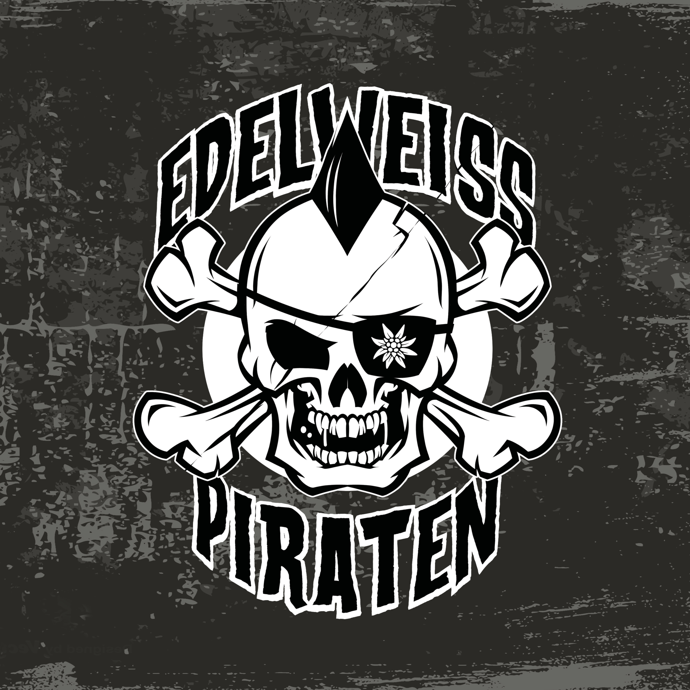

Review
EDELWEISSPIRATEN - Wir sind der Widerstand!

Bei „Edelweiss“ passiert in meinem Kopf erst einmal etwas völlig Unpolitisches.
„Raumschiff Edelweiss.“
Kinder der 90er kennen den Schaden. Kaum steht das Wort irgendwo, meldet sich dieser alte Eurodance-Quatsch ungefragt zurück.
Die Erinnerung hält hier allerdings nicht lange. Der Opener „Edelweisspiraten“ räumt sie mit schön knüppeligem Punkrock beiseite und übernimmt gleich die Vorstellungsrunde.
Keine schlechte Entscheidung. Nach wenigen Minuten sind Bandname, Richtung und Haltung geklärt.
Läuft, Kinders.
Der Name ist nicht von der Alpenblume auf irgendeiner Butterpackung abgeschrieben. Die historischen Edelweißpiraten waren Jugendgruppen, die sich während der NS-Zeit der Gleichschaltung und besonders der Hitlerjugend entzogen. Einige gingen später in aktiveren Widerstand über.
Damit schleppt die Band einen Namen mit Gewicht durch den Verstärker. Sie weiß das offenbar und macht daraus kein Dekoetikett.
Musikalisch wird nicht lange verziert. Punkrock mit deutlicher Oi!-Kante, Chören und schönem Geknüppel. Gerade genug, um die Songs nach vorn zu schieben; mehr wird nicht bestellt.
Besonders sympathisch: Die Edelweisspiraten weigern sich an mehreren Stellen, jeder Textzeile zwanghaft einen Reimpartner hinterherzuschicken.
„Es brennt“ lässt anschließend keinen Zweifel am Anliegen. Einen politischen Gesprächskreis eröffnet der Song damit gewiss nicht. Er richtet sich eindeutig gegen Rechts und besitzt ungefähr die Feinfühligkeit eines Pflastersteins.
Am meisten blieb mir trotzdem „Sabotage“ hängen. Kapitalismuskritik geht bei mir fast immer, nur klingt „Kritik“ hier nach einem verdammt höflichen Leserbrief.
Die Idee ist eher, das System von innen ein wenig umzuräumen. Welche Schublade zuerst aus dem Schrank fällt, bleibt der Fantasie überlassen.
Sehr unschuldiger Zwinkersmiley.
Auch sonst kümmern sich die Edelweisspiraten nicht um Kleinkram. Faschismus, Krieg, Fundamentalismus, gesellschaftlicher Druck und Widerstand stehen auf dem Zettel. Daraus wird kein politischer Grundkurs, sondern Punkrock, der seine Meinung nicht hinter zehn Absätzen Einleitung versteckt.
Manche Zeile holpert. Manche kommt ohne Reim am Ziel an.
Beides ist mir lieber als sauber gebügelte Phrasen, bei denen am Ende zwar jedes Wort sitzt, aber keiner mehr weiß, warum überhaupt jemand die Gitarre eingesteckt hat.
Die EP „Wir sind der Widerstand!“ sagt ziemlich deutlich, wo sie steht, hat genug eigenen Krach im Gebälk und endet nicht als vertontes Flugblatt.
Gibt es auf Bandcamp, erschienen bei NRT-Records.
Ich wollte an dieser Stelle eigentlich noch über die fehlenden Reime meckern.
Spätestens da bemerkte ich: Ich behandle Punkrock gerade wie eine Deutschklausur.
Das wäre nun wirklich peinlich.
Ich höre lieber noch einmal „Sabotage“.
Rein wissenschaftlich.
Irgendjemand muss schließlich prüfen, ob das System noch steht.